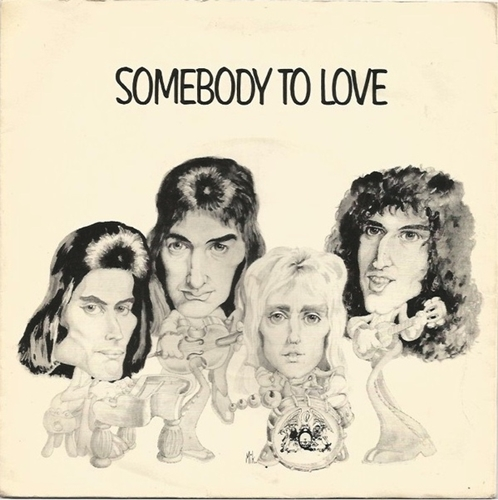
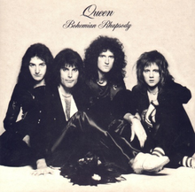
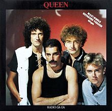

Algumas das músicas da banda:
Somebody To Love
A música é uma espécie de continuação de "Bohemian Rhapsody", porém com outras peculiaridades, por conter forte influência do gospel. Para os vocais de apoio, além de Freddie, houve contribuições de Brian May e Roger Taylor. John Deacon, assim como em todas as outras faixas do Queen não participou dos vocais. Alcançou o segundo lugar nas paradas do Reino Unido e a décima terceira nos EUA.

Bohemiam Rhapsody
"Bohemian Rhapsody" é uma canção composta em 1975 por Freddie Mercury, integrante da banda britânica Queen e incluída no seu álbum A Night at the Opera. Esta canção não possui refrão. Nela, Freddie Mercury, Roger Taylor e Brian May cantam respectivamente nas tessituras média, aguda e grave. May toca a guitarra, Taylor toca bateria, tímpano e gongo, e John Deacon toca o baixo elétrico.

Don't Stop Me Now
Foi lançada pela primeira vez no álbum Jazz. Possui uma melodia mais voltada ao rock puro, diferente de outras canções da banda que tinham um caráter mais melancólico e melódico. A sua letra possui um caráter eufórico e poético: o narrador diz nunca querer parar de viver tão intensamente usando várias metáforas. Por ser uma canção extremamente conotativa, há várias formas de interpretação dessas metáforas.

Radio Ga Ga
A música foi um sucesso mundial, alcançando o primeiro lugar em 19 países, o segundo lugar no UK Singles Chart e a 16ª posição na Billboard Hot 100 dos Estados Unidos. s A banda tocou a canção em cada concerto de 1984 a sua última com o vocalista Freddie Mercury, em 1986, com a sua mais notável performance no Live Aid, em 1985.
